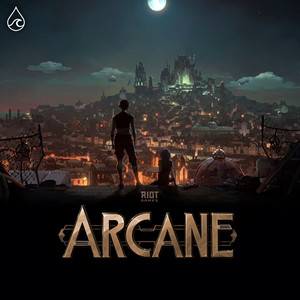

Bun venit în lumea Arcane!
O călătorie fascinantă în universul Runeterra – magie, tehnologie și povești de neuitat
Plonjăm într-un univers captivant în care granițele dintre magie și tehnologie se estompează, iar personajele complexe și poveștile lor memorabile cuceresc inimile fanilor din întreaga lume. Arcane, un fenomen cultural bazat pe universul jocului League of Legends, aduce la viață un spectacol vizual și emoțional unic.
În centrul poveștii stau surorile Vi și Jinx, două suflete prinse între loialitate, trădare și lupte interioare. Serialul explorează tensiunea dintre orașul bogat Piltover și zona marginalizată Zaun, dezvăluind conflicte sociale, alianțe neașteptate și dorința neobosită pentru putere și libertate.
 Află mai multe